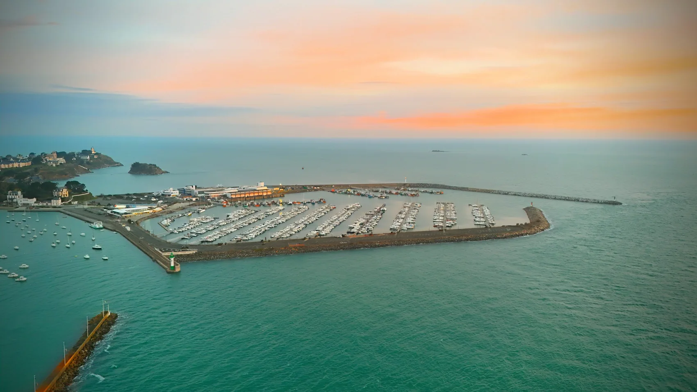
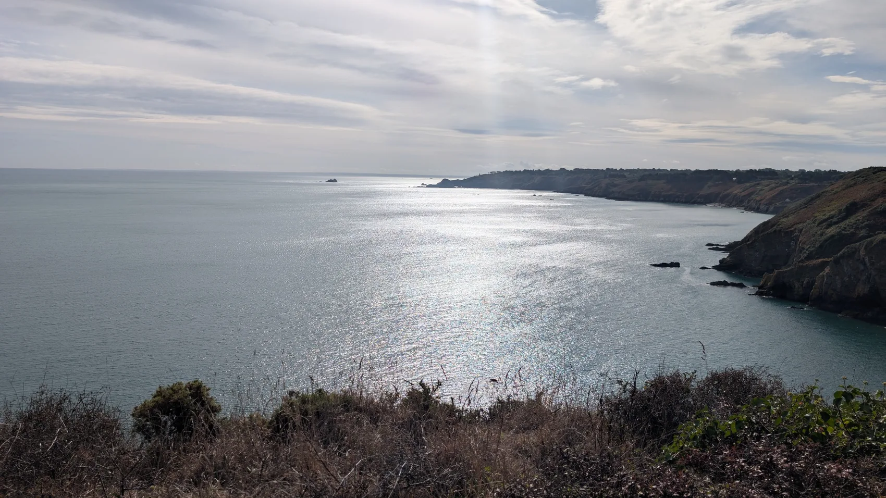
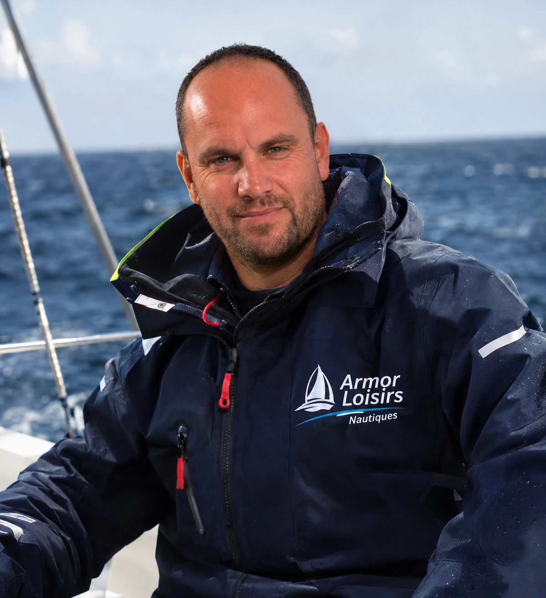
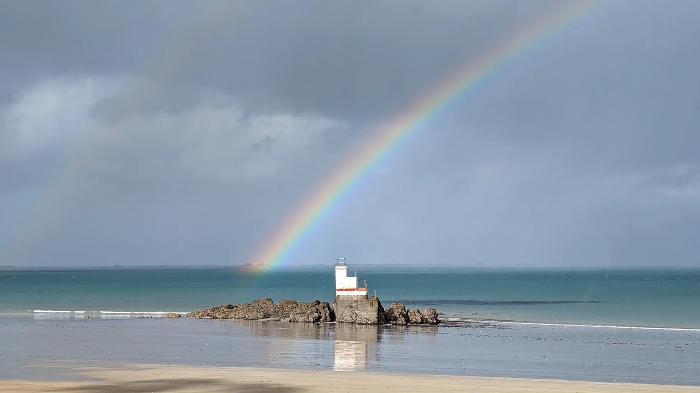
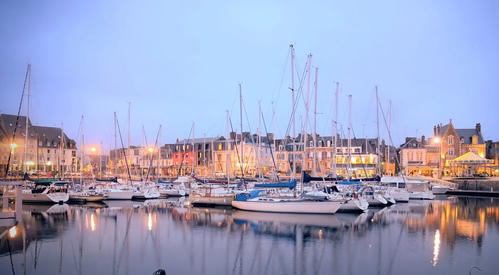
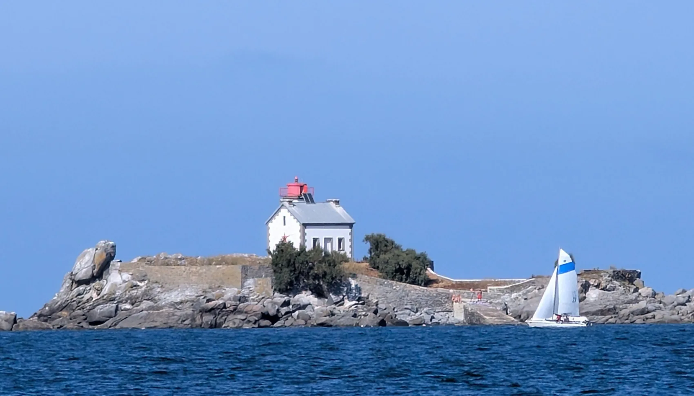
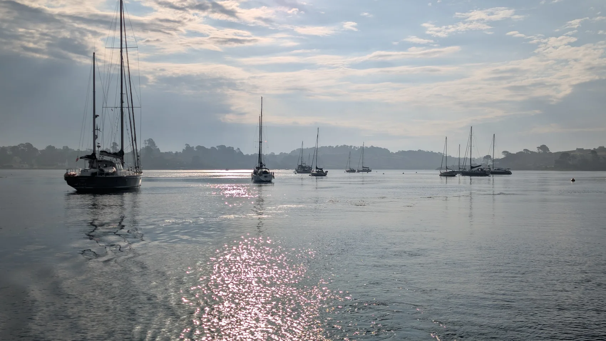
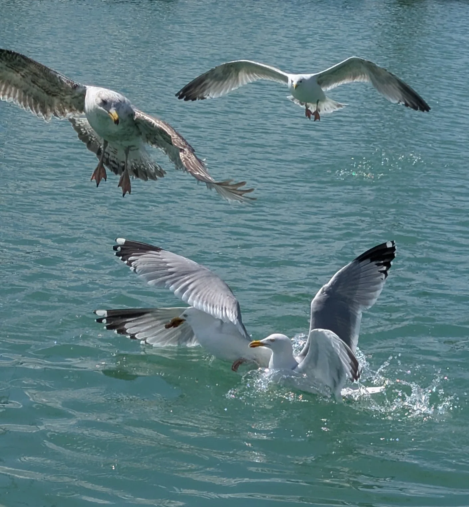

Julien est aux petits soins
Témoignage clientSortie en mer

Avec Julien, vivez la baie autrement et confiez vos projets nautiques à un professionnel de la mer.
Choisissez votre activité et découvrez tout ce que Julien peut faire pour vous.
Les photographies illustrent l'univers nautique d'ALN ; le bateau présenté dans « Sorties en mer » est un visuel d'ambiance.
Ici, tout commence par une rencontre : Julien prend le temps de comprendre votre projet, simple balade ou besoin nautique plus technique.
Au départ de Saint-Quay-Portrieux et de Binic, ALN conjugue passion de la mer, savoir-faire et accompagnement personnalisé.

Les îles Saint-Quay, les falaises de Plouha, les jeux de lumière sur l'eau… Et parfois, le privilège de croiser les phoques au détour d'une balade.
Je suis originaire de Binic et la mer fait partie de ma vie depuis toujours.
J’ai créé ALN pour partager cette passion, accompagner les propriétaires dans leurs projets et aider chacun à se sentir à l’aise sur l’eau. Pour moi, le plus important reste l’écoute, la confiance et le plaisir de naviguer.

Une histoire de navigation, d'expérience et de transmission.
De vraies phrases issues des témoignages publiés sur le site d'Armor Loisirs Nautiques.
Julien est aux petits soins
Très bon relationnel, très professionnel
Le retour par SMS de Julien est très rapide.
Une sélection de photographies authentiques de la région. Aucun décor inventé.




